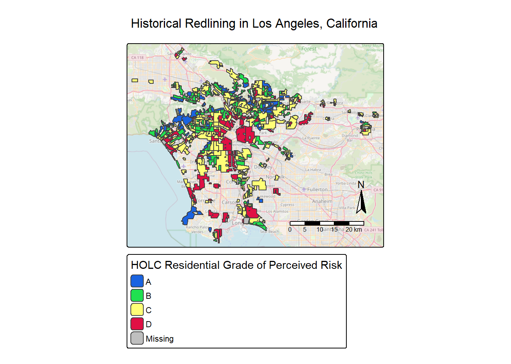
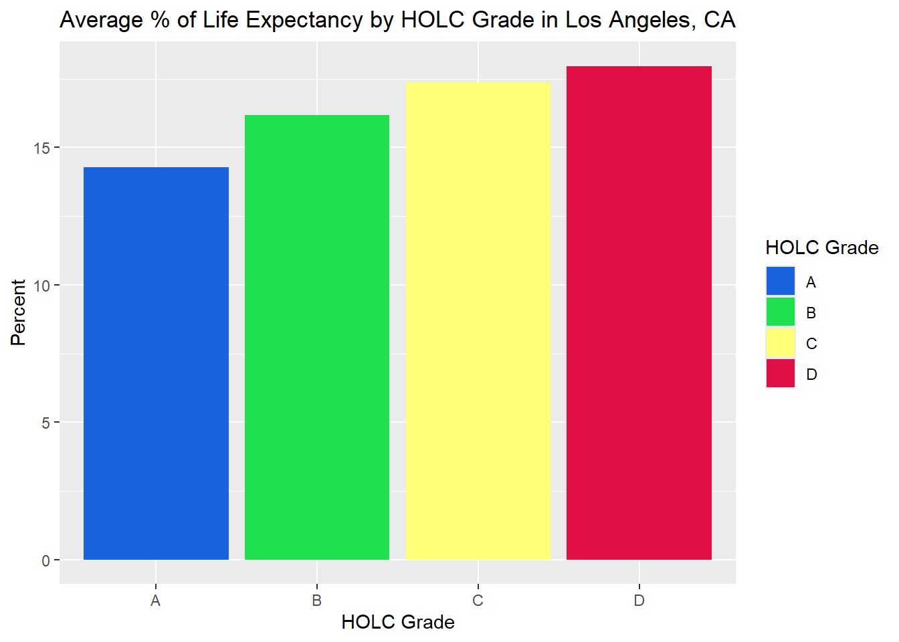
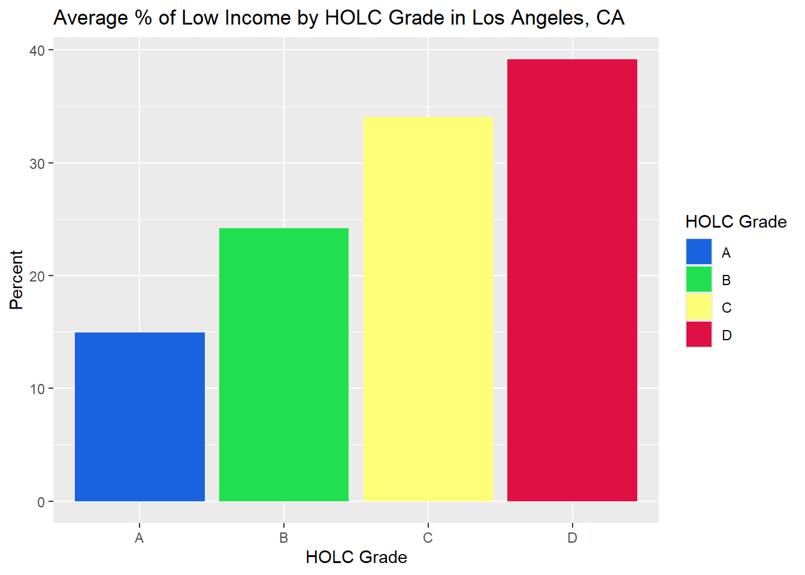
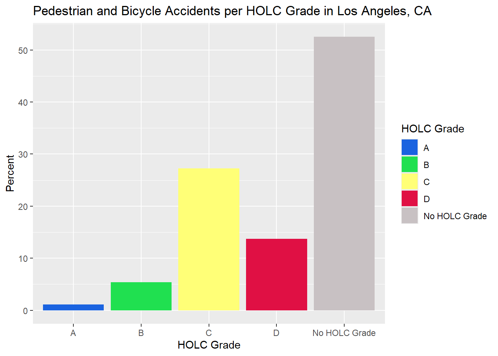

library(tidyverse)
library(sf)
library(here)
library(tmap)
library(stars)
library(viridisLite)
library(knitr)
library(gt)EDS 223 Homework Assignment #2
Exploring patterns of environmental justice
Read-in data, check and transform CRS
# EJ Screen
ejscreen <- sf::st_read(here::here("data", "EJSCREEN_2023_BG_StatePct_with_AS_CNMI_GU_VI.gdb")) Reading layer `EJSCREEN_StatePctiles_with_AS_CNMI_GU_VI' from data source
`C:\Users\ninad\OneDrive\Desktop\eds223\EDS223-HW2\data\EJSCREEN_2023_BG_StatePct_with_AS_CNMI_GU_VI.gdb'
using driver `OpenFileGDB'
Simple feature collection with 243021 features and 223 fields
Geometry type: MULTIPOLYGON
Dimension: XY
Bounding box: xmin: -19951910 ymin: -1617130 xmax: 16259830 ymax: 11554350
Projected CRS: WGS 84 / Pseudo-Mercator# filter to California
california <- ejscreen %>%
dplyr::filter(ST_ABBREV == "CA")
# filter to Los Angeles County
los_angeles <- ejscreen %>%
dplyr::filter(CNTY_NAME %in% c("Los Angeles County"))
# Check CRS for los_angeles dataset
los_angeles_crs <- st_crs(los_angeles)
# Crashes dataset
crashes <- read_csv(here::here("data", "Crashes.csv")) |>
as_tibble() |>
drop_na(POINT_X) |>
drop_na(POINT_Y) |>
st_as_sf(coords = c("POINT_X", "POINT_Y"), crs = 4326, remove = FALSE) |> # Set CRS to 4326 so point calibrate to latitude and longitude
st_transform(crs = st_crs(los_angeles)) # Transform CRS to match EJ Screen Los Angeles dataset
# LA Redlining dataset
redlining_la <- sf::st_read(here::here("data", "mapping-inequality-los-angeles.json"))Reading layer `mapping-inequality-los-angeles' from data source
`C:\Users\ninad\OneDrive\Desktop\eds223\EDS223-HW2\data\mapping-inequality-los-angeles.json'
using driver `GeoJSON'
Simple feature collection with 417 features and 14 fields
Geometry type: MULTIPOLYGON
Dimension: XY
Bounding box: xmin: -118.6104 ymin: 33.70563 xmax: -117.7028 ymax: 34.30388
Geodetic CRS: WGS 84# Check CRS for redlining_la dataset
redlining_la_crs <- st_crs(redlining_la)
# Transform Redlining LA dataset into same CRS as EJScreen dataset
redlining_la <- st_transform(redlining_la, crs = st_crs(los_angeles))Warning message to check CRS
# Warning message to check if CRS of datasets match
if(st_crs(los_angeles) == st_crs(redlining_la)) {
print("CRS matches")
} else {
warning("CRS does not match")
}[1] "CRS matches"# Warning message to check if CRS of datasets match
if(st_crs(los_angeles) == st_crs(crashes)) {
print("CRS matches")
} else {
warning("CRS does not match")
}[1] "CRS matches"Palette for maps and graphs
# Palette for grades of redlining_la dataset
holc_palette <- c(
"A" = "#1a63e0",
"B" = "#20e050",
"C" = "#ffff77",
"D" = "#e01044",
"No HOLC Grade" = "#c8c1c3",
"Missing" = "#c8c1c3")Map of historical redlining neighborhoods by HOLC grade in Los Angeles, CA
tm_shape(redlining_la) +
tm_polygons(fill = "grade",
title = "HOLC Residential Grade of Perceived Risk",
palette = holc_palette
) +
tm_title("Historical Redlining in Los Angeles, California") +
tm_basemap("OpenStreetMap", alpha = 0.6) +
tm_compass() +
tm_scalebar()
Table summary of the percentage of census block groups that fall within each HOLC grade in Los Angeles, CA
# Left join EJ Screen Los Angeles County dataset with Redlining LA dataset
join_ejscreen_redlining <- st_join(los_angeles, redlining_la)
# Drop geometry to act as a tidyverse dataframe
ejscreen_redlining <- st_drop_geometry(join_ejscreen_redlining)
# Summary table of percentage of census block groups that fall within each HOLC grade
ejscreen_redlining_percent <- ejscreen_redlining |>
mutate(
grade = ifelse(is.na(grade), "No HOLC Grade", grade)
) |>
count(grade) |> # Counting number of grade types that have census block groups
mutate(percent = (n / sum(n)) * 100) |>
select(-n) |> # Removing count number in table
rename(Grade = grade, Percent = percent)
gt(ejscreen_redlining_percent) |>
tab_header(title = 'Percent of Census Block Groups Within Each HOLC grade in Los Angeles, CA')| Percent of Census Block Groups Within Each HOLC grade in Los Angeles, CA | |
| Grade | Percent |
|---|---|
| A | 4.99555 |
| B | 13.78505 |
| C | 34.02314 |
| D | 14.97552 |
| No HOLC Grade | 32.22074 |
Visualizations summarizing the percentages of Low Life Expectancy, and Low Income within each HOLC grades
# Percent of Low Life Expectancy by Grade
life_exp_grade <- ejscreen_redlining |>
group_by(grade) |>
drop_na(grade) |>
summarise(life_exp = mean(LIFEEXPPCT, na.rm = TRUE)*100)
gt(life_exp_grade)| grade | life_exp |
|---|---|
| A | 14.27607 |
| B | 16.19266 |
| C | 17.38525 |
| D | 17.96768 |
ggplot(life_exp_grade, mapping = aes(x = grade, y = life_exp, fill = grade)) +
geom_col() +
labs(
title = 'Average % of Life Expectancy by HOLC Grade in Los Angeles, CA',
x = 'HOLC Grade',
y = 'Percent',
fill = 'HOLC Grade'
) +
scale_fill_manual(values = holc_palette)
# Percent of Low Income Households by Grade
low_income_grade <- ejscreen_redlining |>
group_by(grade) |>
drop_na(grade) |>
summarise(low_income = (mean(LOWINCPCT) * 100), na.rm = TRUE)
gt(low_income_grade)| grade | low_income | na.rm |
|---|---|---|
| A | 14.97511 | TRUE |
| B | 24.20120 | TRUE |
| C | 34.08981 | TRUE |
| D | 39.19059 | TRUE |
ggplot(low_income_grade, mapping = aes(x = grade, y = low_income, fill = grade)) +
geom_col() +
labs(
title = 'Average % of Low Income by HOLC Grade in Los Angeles, CA',
x = 'HOLC Grade',
y = 'Percent',
fill = 'HOLC Grade'
) +
scale_fill_manual(values = holc_palette)
Results Summary
Redlined neighborhoods are neighborhoods that were historically marked as risky for mortgage lending because of racist and classist policies that discriminated against residents based on their racial, ethnic, and/ or economic background. These discriminatory practices contributed to environmental injustice, as redlined areas often experienced greater environmental burdens. The EJ Screen Low Life Expectancy data and Low Income Households data supported the claim that households located in the hazardous, redlined neighborhoods (Grade D) has a higher percentage of low-income household at 39.19% and has a higher percentage of low life expectancy at 17.97%. Grade Athe group with the best for mortgage lending and investment, demonstrated that the lowest percent of low-income households at 14.98% and lowest percentage of Low Life Expectancy of 14.28%. Lower life expectancy in redlined neighborhoods may be associated with various environmental factors, including closer proximity to toxic waste sites, higher levels of pollution, and reduced protection from environmental contaminants. These findings suggest that the legacy of redlining continues to contribute to socioeconomic and health disparities in affected communities today.
Figure summarizing the percent of Pedestrian and Bicycle Accidents within each HOLC grade
# Filter to columns I want that describe the number of Pedestrian and Bicycle Accidents
select_crashes <- crashes |>
select(POINT_X, POINT_Y, PEDESTRIAN_ACCIDENT, BICYCLE_ACCIDENT)
# Classify NAs as No Accident in PEDESTRIAN_ACCIDENT and BICYCLE_ACCIDENT columns
select_crashes <- select_crashes |>
mutate(PEDESTRIAN_ACCIDENT = ifelse(is.na(PEDESTRIAN_ACCIDENT), "No accident", PEDESTRIAN_ACCIDENT)) |>
mutate(BICYCLE_ACCIDENT = ifelse(is.na(BICYCLE_ACCIDENT), "No accident", BICYCLE_ACCIDENT))
# Join datasets and drop geometry
join_crashes_redlining <- st_join(select_crashes, redlining_la) |>
st_drop_geometry()
# Percent table describing the percent of observations within each HOLC grade
crashes_redlining_percent <- join_crashes_redlining |>
mutate(
grade = ifelse(is.na(grade), "No HOLC Grade", grade)
) |>
filter(PEDESTRIAN_ACCIDENT == "Y" | BICYCLE_ACCIDENT == "Y") |>
count(grade) |>
mutate(percent = (n / sum(n)) * 100) |>
select(-n) |>
rename(Grade = grade, Percent = percent)
# Table
gt(crashes_redlining_percent) |>
tab_header(title = 'Percent of Pedestrian and Bicycle Accidents Within Each HOLC grade in Los Angeles, CA')| Percent of Pedestrian and Bicycle Accidents Within Each HOLC grade in Los Angeles, CA | |
| Grade | Percent |
|---|---|
| A | 1.087646 |
| B | 5.383848 |
| C | 27.269706 |
| D | 13.692257 |
| No HOLC Grade | 52.566543 |
# Graph of Pedestrian and Bicycle Accidents per HOLC Grade in Los Angeles, CA
ggplot(crashes_redlining_percent, aes(x = Grade, y = Percent, fill = Grade)) +
geom_col() +
labs(
title = 'Pedestrian and Bicycle Accidents per HOLC Grade in Los Angeles, CA',
x = 'HOLC Grade',
y = 'Percent',
fill = 'HOLC Grade'
) +
scale_fill_manual(values = holc_palette) 
Results Summary
This graph shows that Grade C (27.27%) and Grade D (13.69%) neighborhoods had the highest percentages of pedestrian and bicycle accidents, while Grade A (1.08%) and Grade B (5.39%) neighborhoods had the lowest percentages. These findings suggest that neighborhoods classified as declining or hazardous may experience conditions that increase the likelihood of pedestrian and bicycle accidents, such as poorly maintained roads and sidewalks, inadequate pedestrian infrastructure, and limited access to bike lanes.